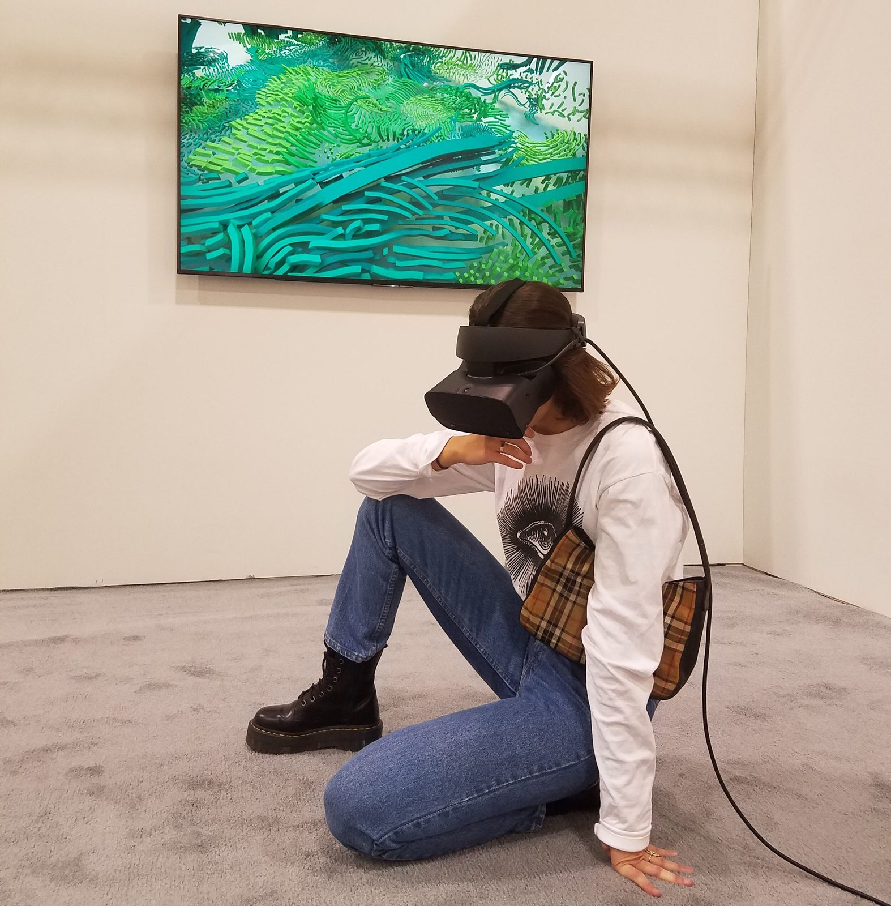
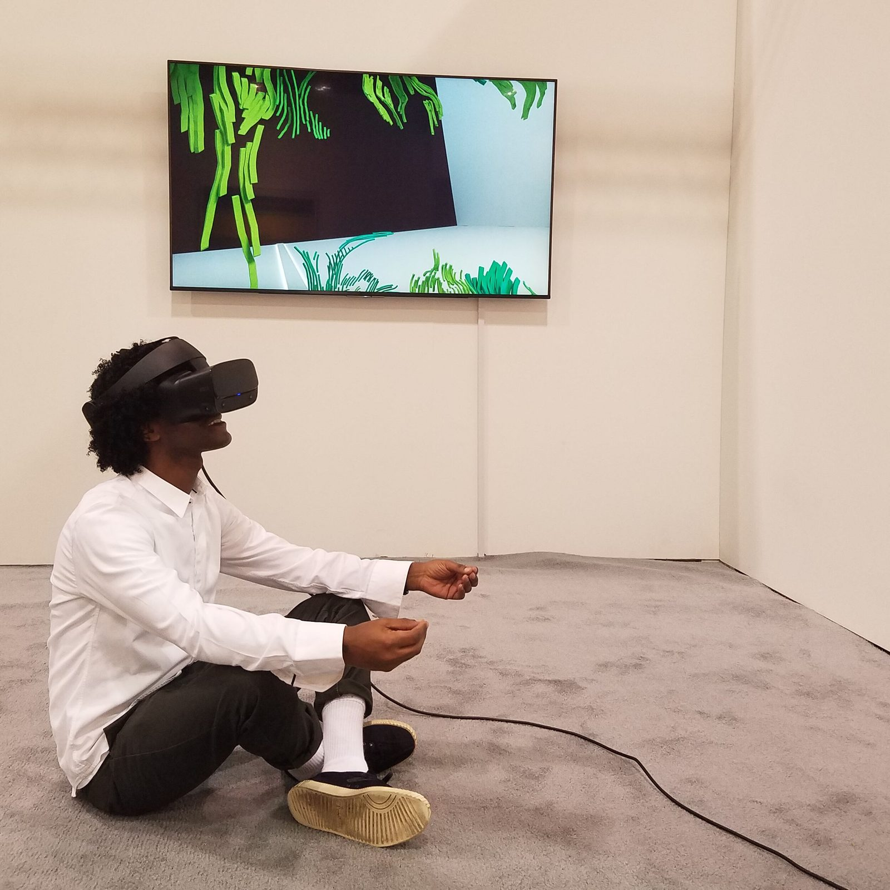
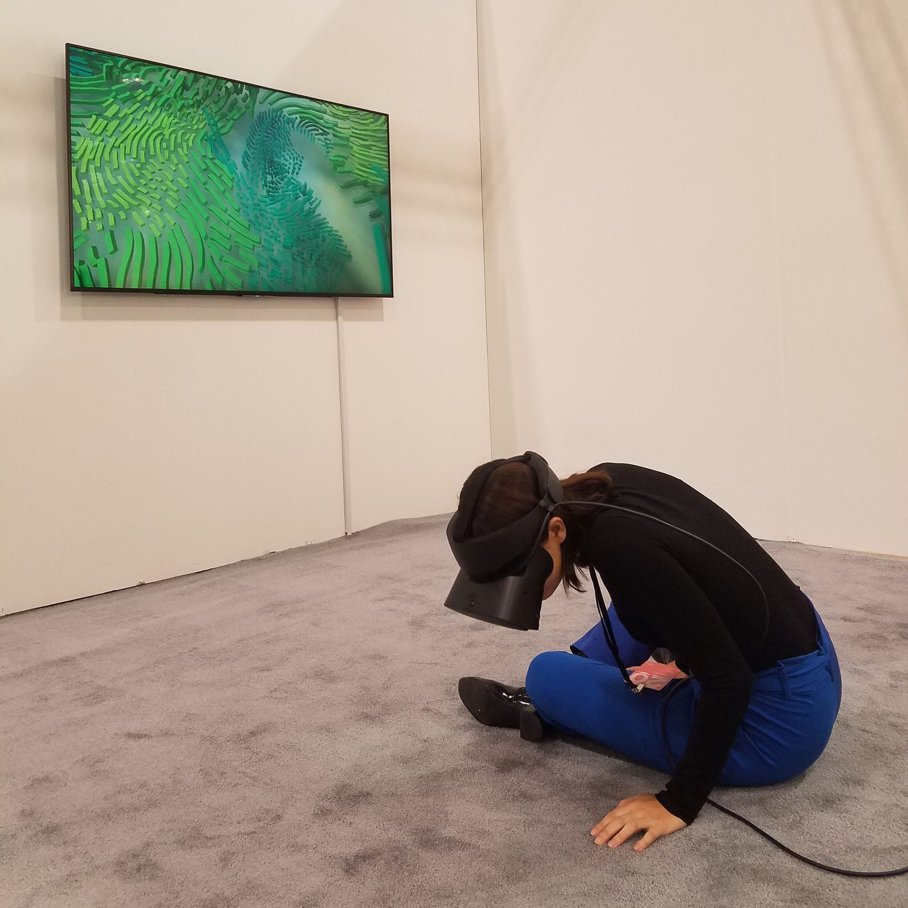
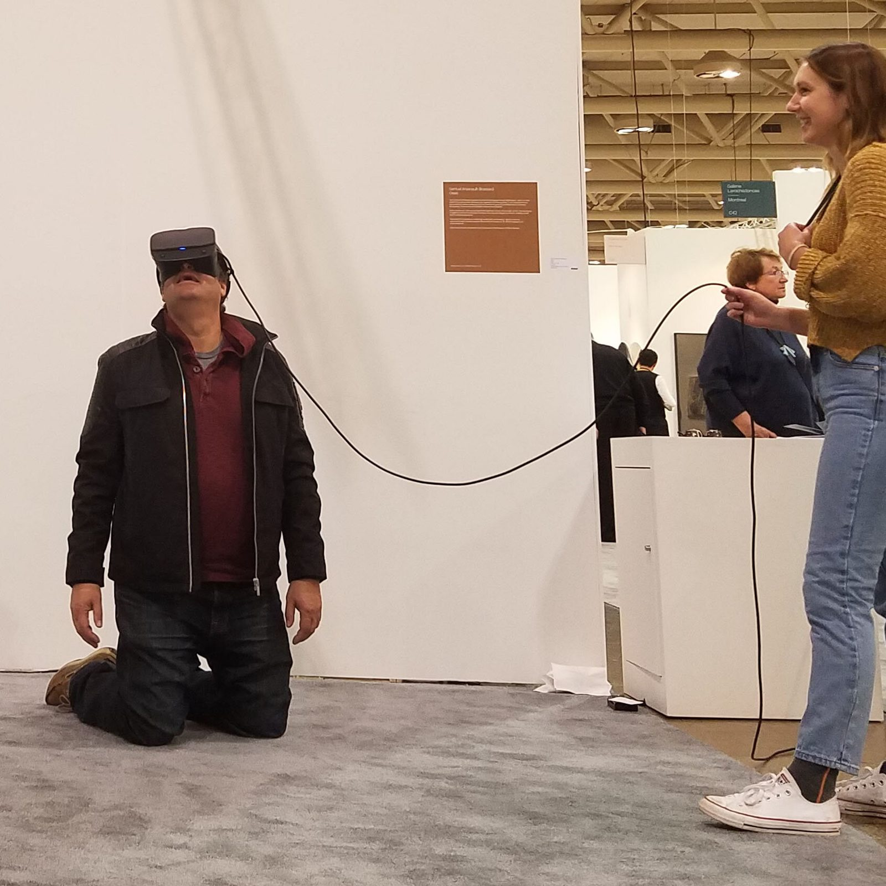
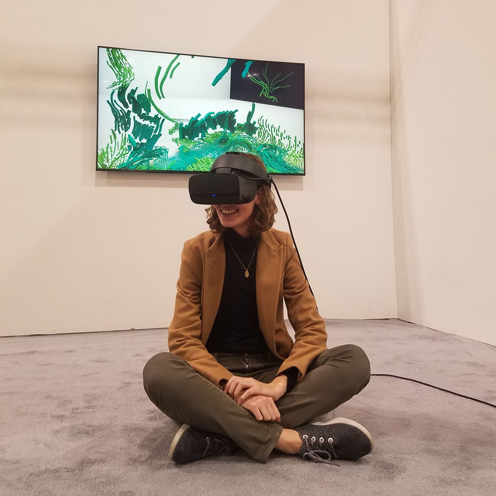
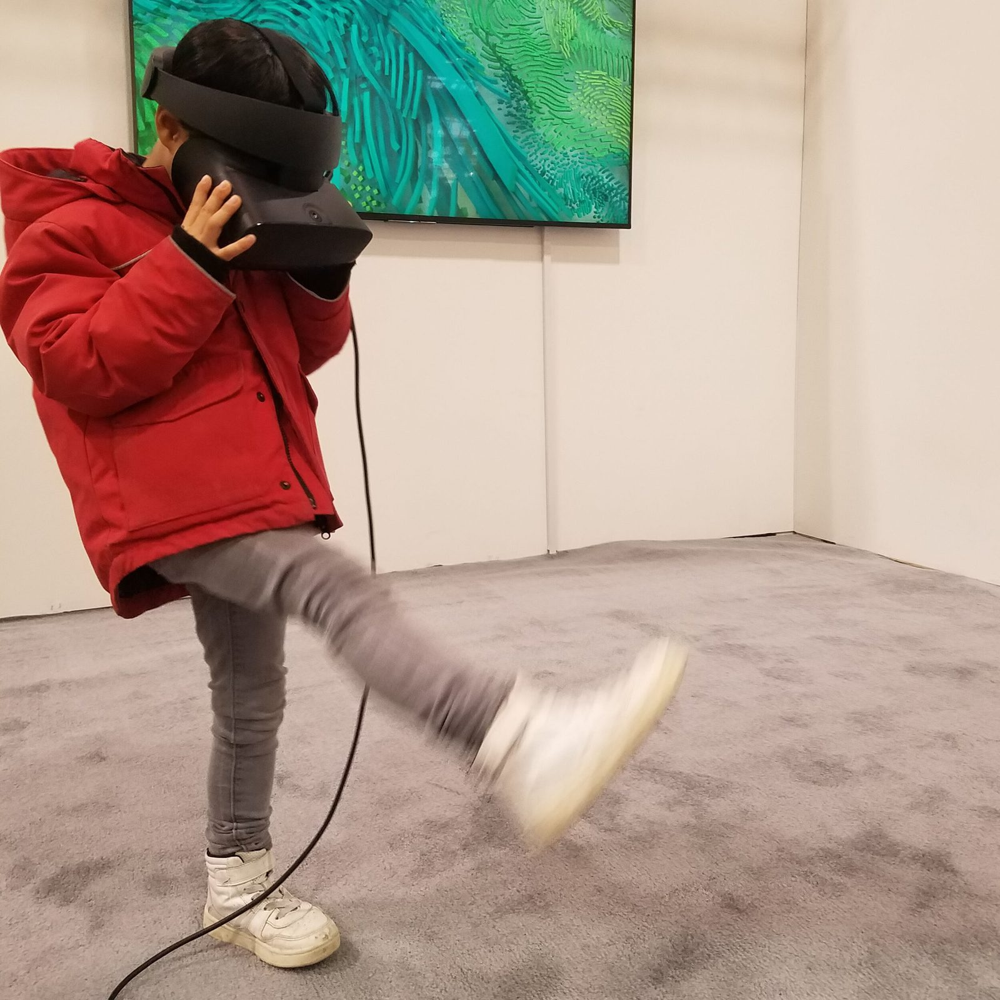
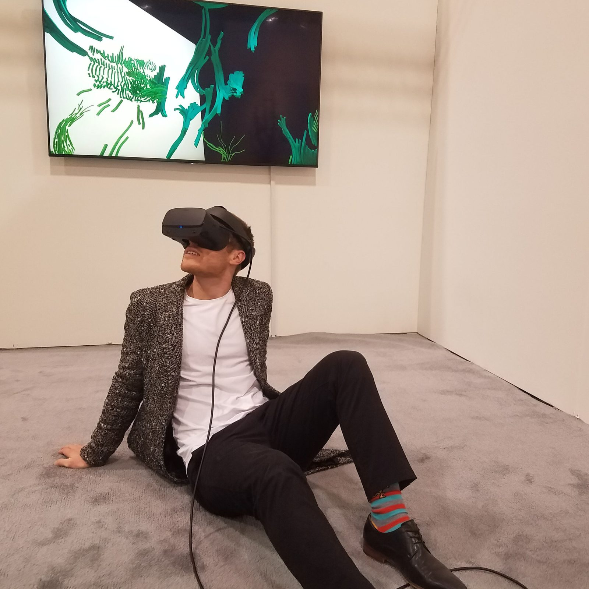

One of the first times a hand-sculpted VR environment was shown at a major Canadian art fair. OASIS turned the convention floor into a meditation garden, and the visitors into performers.
In October 2019, Galerie ELLEPHANT presented OASIS at Art Toronto, one of Canada’s most prominent contemporary art fairs. The piece, a digital garden prototype originally titled Metaverse Room, places the majority of its sculptural detail on the ground plane: grasses, tendrils, flows, and organic forms that erupt through the floor of a dissolving room.
This design decision had a remarkable social effect. Visitors who entered the VR garden instinctively crouched, sat, or even lay down on the art fair floor, lowering themselves to the level of the virtual grass. In the controlled context of a major art fair, surrounded by hundreds of observers, this became an unexpectedly intimate and disarming act. The spectator, visible to the crowd outside the headset, became the show.
By placing the majority of the detail on the ground, visitors experienced the environment as if sitting in grass. This posture is disarming for many people, especially when being observed in a crowd. Still, many visitors let themselves go during their visit to OASIS.
Each visitor’s physical posture became a visible index of their engagement with the virtual space. Some sat cross-legged, some knelt, some reached toward the ground. The booth became a stage where the audience outside the headset could watch someone gradually surrender to an invisible world.

In the controlled context of a major art fair, surrounded by hundreds of observers, crouching and sitting on the floor became an unexpectedly intimate and disarming act.



The Art Toronto presentation was significant for several reasons. It demonstrated that a hand-sculpted VR environment could hold its own alongside painting, sculpture, and photography in a major art fair context. It proved that the physical act of experiencing VR, the visible surrender of a person to an invisible world, could itself become a compelling spectacle for observers. And it introduced the custom VR plinth designed for ELLEPHANT, which presented the headset with the material dignity of a gallery object.
The experience at Art Toronto reinforced a conviction that would carry through to Gloam: the most powerful VR art creates conditions for contemplation. Spaces that invite visitors to lower their guard, change their posture, and inhabit a world at a pace the physical world rarely permits.

